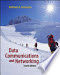
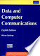

| Data Communications and Networking | ||
|---|---|---|
| Author: | Behrouz A. Forouzan |  |
| Publisher: | McGraw Hill Education | |
| Edition: | 5th Edition | |
| E-Book: | Download E-Book | |
| TCP/IP Protocol Suite | ||
|---|---|---|
| Author: | Behrouz A. Forouzan | |
| Publisher: | McGraw Hill Education | |
| Edition: | 4th edition | |
| E-Book: | Download E-Book | |
| Data and Computer Communications | ||
|---|---|---|
| Author: | William Stallings |  |
| Publisher: | Pearson Education | |
| Edition: | 10th edition | |
| E-Book: | Download E-Book | |